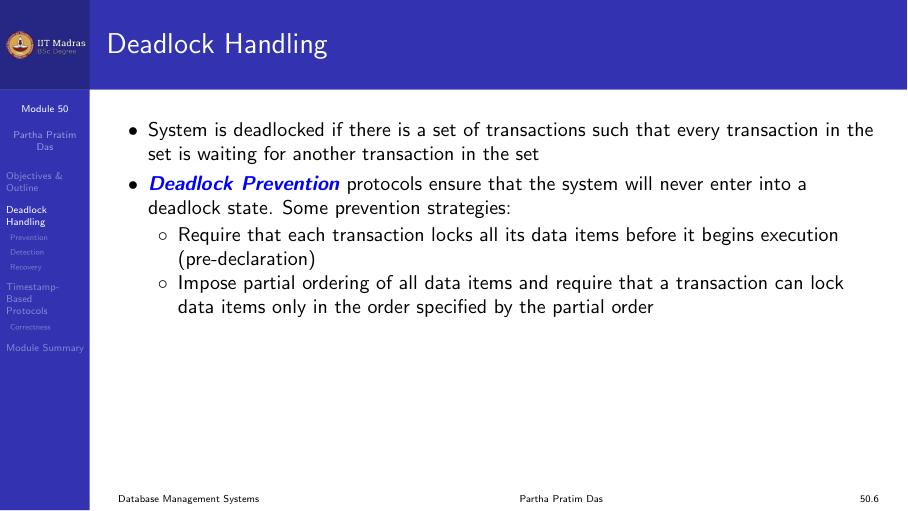
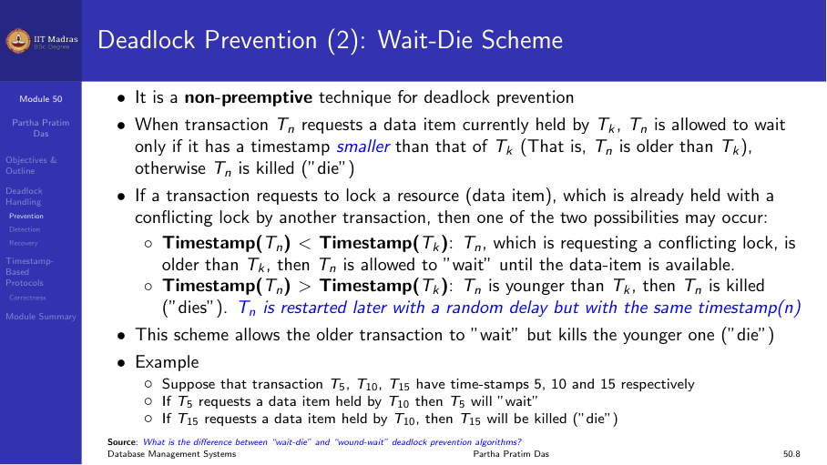
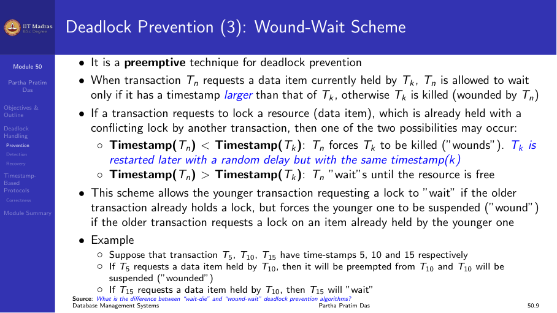
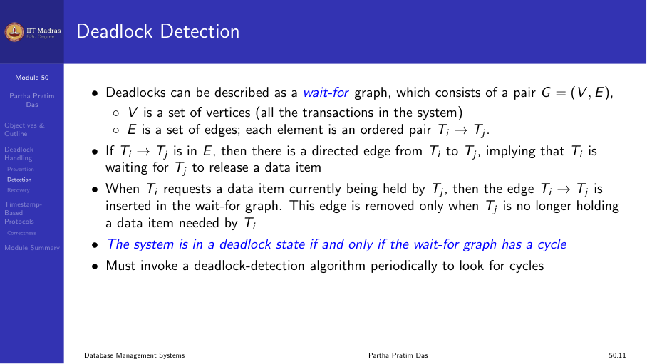
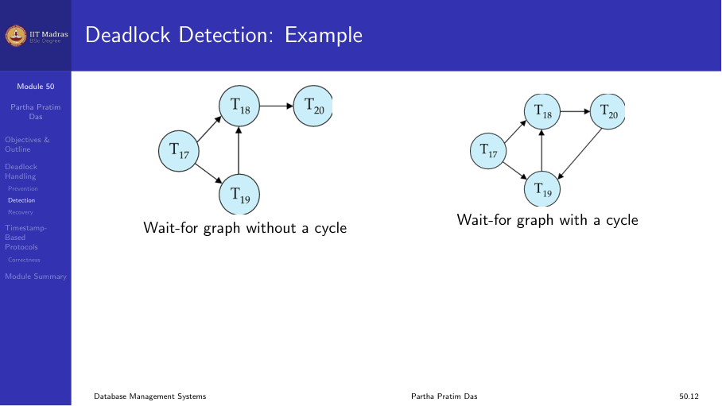
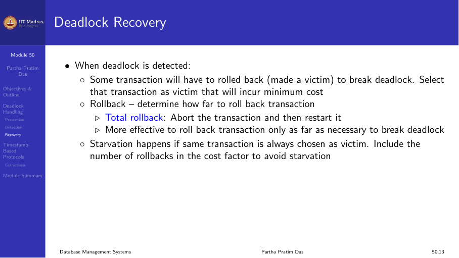
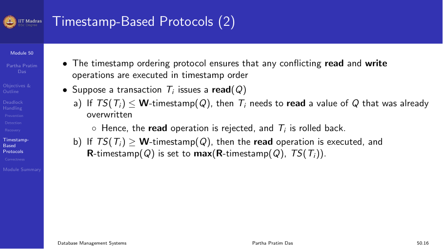
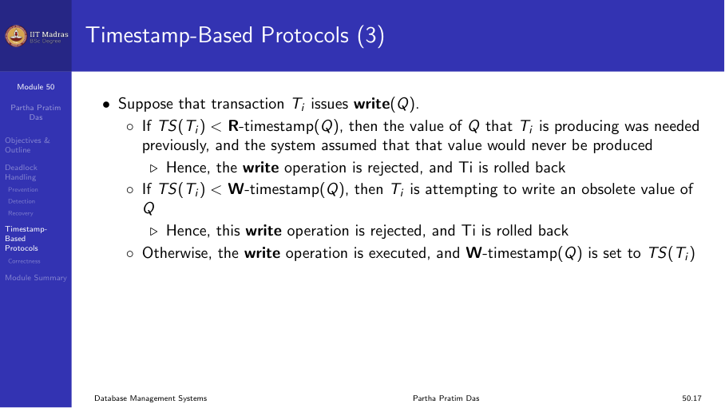
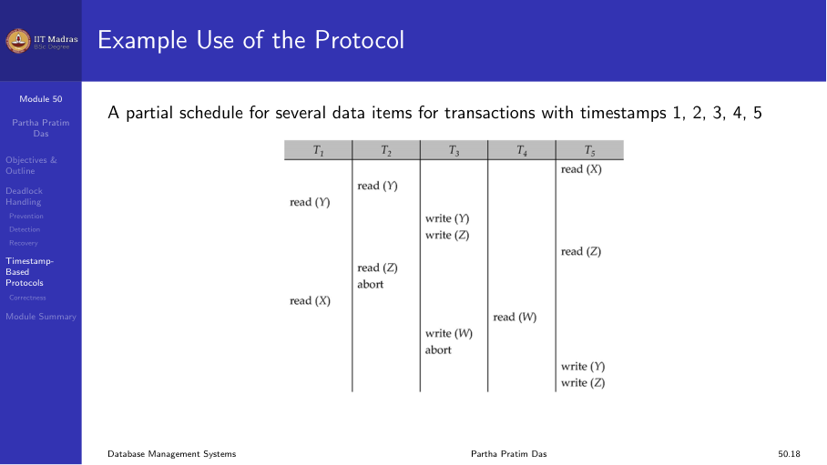
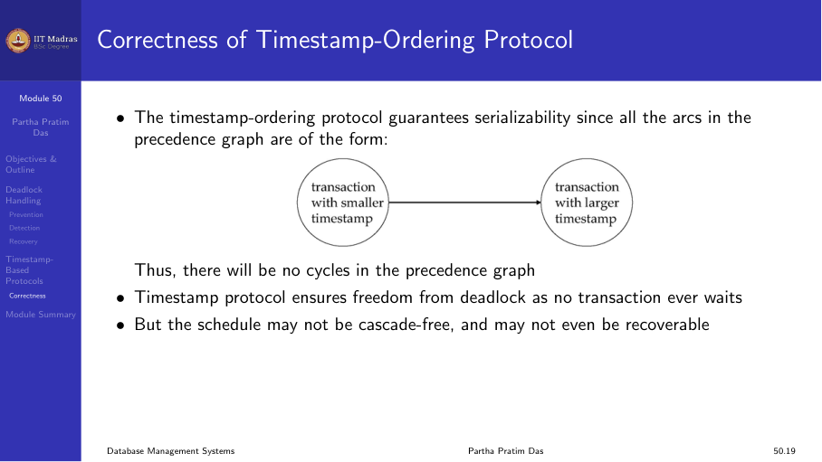

10.5 Deadlock and timestamp protocols
Deadlock handling
A system is in a deadlock state if there is a set of transactions such that every transaction in the set is waiting for another transaction in the set to release a lock. No transaction in the set can proceed.
Three approaches to dealing with deadlocks:
- Deadlock prevention. Ensure the system never enters a deadlock.
- Deadlock detection. Allow deadlocks to occur, detect them, and recover.
- Deadlock avoidance. Use additional information to avoid deadlocks.

Transaction timestamps
A timestamp is a unique identifier assigned by the DBMS to identify the relative starting time of a transaction. Timestamps are used in both deadlock prevention and timestamp-based concurrency control.
Properties: - Each transaction receives a timestamp when it enters the system. - If Tᵢ starts before Tⱼ, then TS(Tᵢ) < TS(Tⱼ). - Timestamps are unique and monotonically increasing.
Deadlock prevention
Deadlock prevention protocols ensure that the system never enters a deadlock state. One prevention strategy: require that each transaction locks all its data items before it begins execution (pre-acquisition).
Two common timestamp-based prevention schemes:
Wait-die scheme (non-preemptive)
When transaction Tᵢ requests a data item held by Tⱼ:
- If TS(Tᵢ) < TS(Tⱼ) (Tᵢ is older), Tᵢ is allowed to wait.
- If TS(Tᵢ) > TS(Tⱼ) (Tᵢ is younger), Tᵢ is killed (dies) and restarted with its original timestamp.
Older transactions wait for younger ones. Younger transactions never wait for older ones — they die instead.

Wound-wait scheme (preemptive)
When transaction Tᵢ requests a data item held by Tⱼ:
- If TS(Tᵢ) < TS(Tⱼ) (Tᵢ is older), Tⱼ is wounded (killed) and its locks are released. Tᵢ gets the lock.
- If TS(Tᵢ) > TS(Tⱼ) (Tᵢ is younger), Tᵢ is allowed to wait.
Older transactions wound younger ones and take their locks. Younger transactions wait for older ones.

Properties of wait-die and wound-wait
In both schemes, a rolled-back transaction is restarted with its original timestamp. This ensures that older transactions have precedence over newer ones, and starvation is avoided.
| Scheme | Older wants younger’s lock | Younger wants older’s lock |
|---|---|---|
| Wait-die | Wait | Die |
| Wound-wait | Wound | Wait |
Timeout-based schemes
A simpler approach: a transaction waits for a lock only for a specified amount of time. If the lock has not been granted within the timeout, the transaction is rolled back and restarted.
- Advantage. Simple to implement.
- Disadvantage. Difficult to choose the right timeout value. Too short causes unnecessary rollbacks. Too long causes long waits.
Deadlock detection
Deadlocks can be described using a wait-for graph G = (V, E):
- V is the set of transactions in the system.
- E contains directed edges Tᵢ → Tⱼ if Tᵢ is waiting for Tⱼ to release a data item.
The system is in a deadlock state if and only if the wait-for graph contains a cycle.

Example
No cycle (no deadlock):
T1 → T2 → T3 → T4T1 waits for T2, T2 waits for T3, T3 waits for T4. No cycle, so eventually T4 finishes, then T3, then T2, then T1.
With cycle (deadlock):
T1 → T2 → T3 → T1T1 waits for T2, T2 waits for T3, T3 waits for T1. No transaction can proceed. Deadlock detected.

Deadlock recovery
When a deadlock is detected, the system must break it:
Select a victim. Choose a transaction to roll back. The victim should be the transaction that incurs the minimum cost (fewest locks, least work, furthest from completion).
Rollback. Determine how far to roll back:
- Total rollback. Abort the transaction and restart it.
- Partial rollback. Roll back to a savepoint and release only the locks held since that point.
Starvation. A transaction selected as victim repeatedly should not starve. The system must ensure that the same transaction is not always chosen.

Timestamp-based protocols
Timestamp-based protocols use timestamps to order transactions without using locks. They eliminate deadlocks entirely.
The timestamp-ordering protocol ensures that conflicting read and write operations are executed in timestamp order.
Read operation
When transaction Tᵢ issues read(Q):
- If TS(Tᵢ) < W-timestamp(Q), the write timestamp of Q is newer than Tᵢ. Tᵢ needs to read a value of Q that was already overwritten. Reject read and roll back Tᵢ.
- If TS(Tᵢ) ≥ W-timestamp(Q), execute the read. Set R-timestamp(Q) = max(R-timestamp(Q), TS(Tᵢ)).

Write operation
When transaction Tᵢ issues write(Q):
- If TS(Tᵢ) < R-timestamp(Q), the value of Q that Tᵢ is producing was already needed by a newer transaction. Reject write and roll back Tᵢ.
- If TS(Tᵢ) < W-timestamp(Q), Tᵢ is attempting to write an obsolete value of Q. Reject write and roll back Tᵢ.
- Otherwise, execute the write. Set W-timestamp(Q) = TS(Tᵢ).

Example
A partial schedule for transactions with timestamps 1, 2, 3, 4, 5:
T1: read(X)
T2: read(Y)
T3: write(Y) → T3 timestamp < R-timestamp(Y)? No. Execute.
T4: write(X) → TS(4) < R-timestamp(X)? No (set by T1). Execute.
T5: read(Y) → TS(5) < W-timestamp(Y)? TS(5)=5, W-timestamp(Y)=3. No. Execute.The timestamp order ensures serializability.

Correctness
The timestamp-ordering protocol guarantees serializability because all edges in the precedence graph go from a transaction with a smaller timestamp to a transaction with a larger timestamp:
TS(smaller) → TS(larger)
No cycles can form in such a precedence graph.

Summary
- Deadlock prevention (wait-die, wound-wait) ensures the system never deadlocks by controlling which transactions wait.
- Deadlock detection uses a wait-for graph; a cycle indicates deadlock.
- Recovery selects a victim and rolls it back.
- Timestamp-based protocols order transactions by timestamps without locks, eliminating deadlocks entirely.
- Each approach has trade-offs between concurrency, overhead, and complexity.